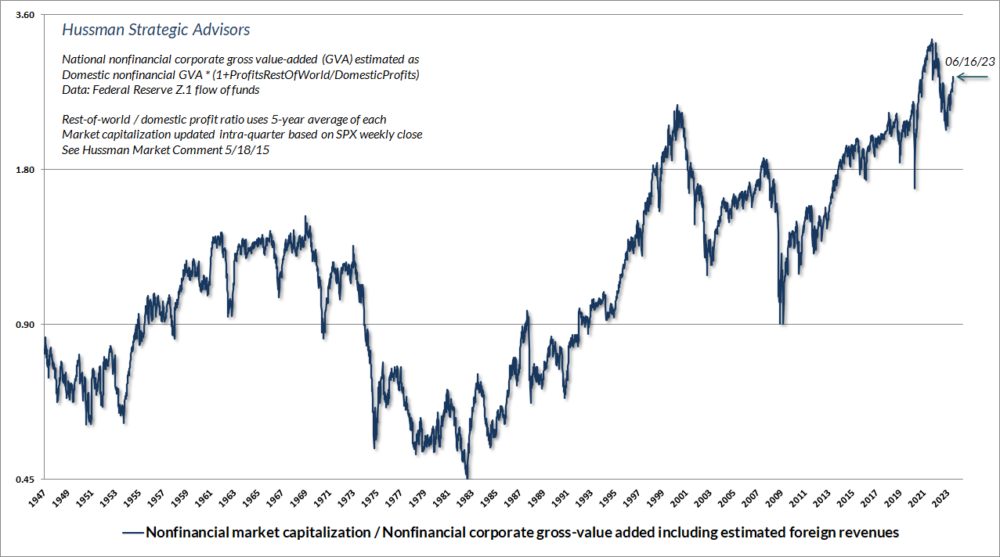
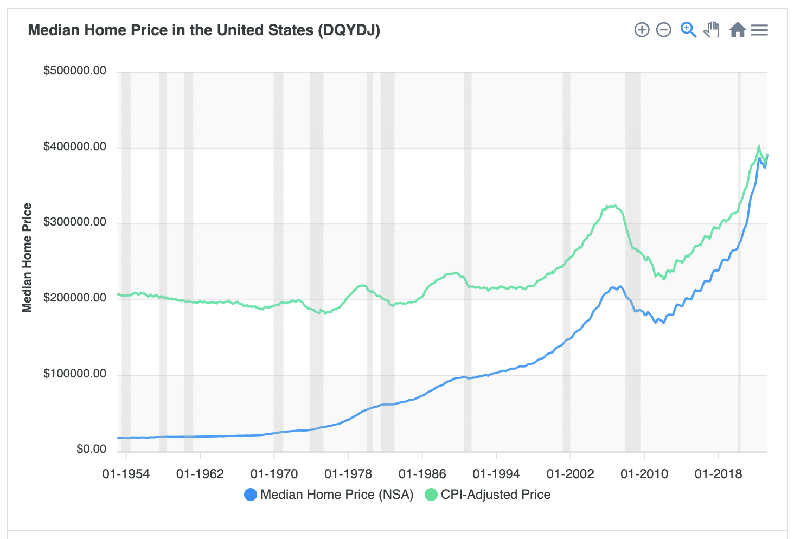

If you don't read Matt Stoller's newsletter Big, you should. He writes about the consolidation of everything — recently candy, videogames, Hollywood, generic drug purchasing power airlines, everything — and is also a tribune for the very hopeful turn on antitrust under the Biden Administration and Lina Khan's FTC. We live in an era where clowns on televisions try to get us mad at the gub'mint and its taxes, while we are quietly taxed into penury and precarity by rents embedded in the price of everything we purchase. Don't look here, look there.
A very important good we try to purchase is future well-being. When we "save" or "invest", we pay a price today in order to buy cashflows far into the future. When we purchase a home, we purchase a stream of shelter and amenities extending indefinitely in time, hoping to endow for ourselves and perhaps our children a secure and comfortable life.
In general, we tend to think of the "FIRE" industry (finance, insurance, and real estate) in abstract terms. There are yields and premiums and earnings and buybacks and god knows what else. Just buy a frigging index fund, right? Don't look here. Look there. It's too confusing? Then trust me.
No. What the FIRE industry sells is not abstract at all. The product it vends is future well-being. And like candy or plane tickets or drugs, whatever future well-being we purchase has a price.
If you do not read John Hussman's market comment, you should. He writes about financial markets, their history, investor psychology. But most fundamentally, he writes about price.
Here is a graph from his latest market comment:
"Nonfinancial market capitalization / Nonfinancial corporate gross-value added including estimated foreign revenues" sounds like something very complicated. But at base, this is just a graph of the price of US shares.
Each year, US firms produce stuff that has some value when sold into the market. How much does it cost to buy shares representing a dollar of that recurring stream of gross production, going into (and hopefully growing into) the indefinite future?
The absolute number isn't very meaningful, and you can (Hussman often does) compare it to other valuation measures's like Shiller CAPE (cycle-adjusted profits-to-earning ratio) or simple price-to-sales ratios. For all of these measures, the shape is broadly similar. From a nadir in the early 1980s, the measures rise, by the 1990s, to new heights relative to mid-20th-Century experience. Thereafter, despite some pretty wild fluctuations (the dot-com crash, the 2008 financial crisis), the attractor these measures oscillate around remains secularly higher in the post-1990s period than during the midcentury period.
In other words, purchasing future well-being in the form of investment cash flows has grown a lot more expensive over this period.
This was great news, if you purchased claims on future cash flows early in the period. You got your cash flows cheap, and now you also have the option to resell them to others at an appreciated price if you find you need purchasing power urgently.
But this is terrible news for people in the market today, trying to endow future well-being for themselves or their family. Endowing a dollar's worth of future cashflow is, arguably, two to three times as expensive as it used to be.
Unless, of course, future cash flows are going to continue to get more expensive even into the indefinite future. Then current buyers also can be the ones who bought early, and benefit from appreciation and an option to sell.
If the good we were talking about were a cans of beans, it would be obvious that an increasing price might be good for people who already have cans of beans or who can produce them, but bad for people who need to eat but don't already have any beans. There is a divergence of interest between incumbent owners and potential buyers.
But with financial assets, incumbent owners go on CNBC and say, "no, it's great that the price of beans has gone up, if you don't have any yet buy however many you can because the price is going to go up more!" Incumbent owners persuade potential buyers that there is no divergence of interest, they're just a but late to the game, no big deal, just get in on the action now.
When you are hungry and you can only buy three beans, you recognize claims like this are absurd. But give the beans a ticker symbol though and somehow it makes sense. In fact, though, what today's purchasers need is future flows of well-being, and those have grown exorbitantly expensive. Continued appreciation is a sales pitch, a hope, but not a thing you can reasonably know that you are buying.
An exuberant stock market is great for current stockholders, at the expense of people who have not yet endowed their futures but would like to. It does not represent a "good economy". It represents a circumstance where some people are well off, and other people are screwed.
Let's look at housing. From DQYDJ, here's a graph of median US home prices, including (the green line) inflation-adjusted prices.
Quite similarly to what we observed with stocks, we can see that beginning in the 1980s, the inflation-adjusted cost of a US home rises, ending up today at roughly double the midcentury norm.
As with stocks, financial news people and incumbent homeowners think this is a great thing. We are building wealth!
But to people who have not yet prepurchased comfort and shelter out into the indefinite future, this jump in price is just a jump in cost. Future well-being that in the past might have been affordable to them costs twice as much as it used to cost. Home price appreciation is not remotely an unalloyed good. It's good for incumbents, bad for new entrants into the future housing market. (Yes, median price masks quality improvements over time. No, that doesn't change the basic story.)
With housing, it is now pretty common to acknowledge that a coalition of incumbent of homeowners effectively forms a cartel that uses regulation and other tools to maintain housing scarcity, in order to protect and enhance both the market values and amenity values of their homes. "NIMBYs", people who have already purchased future well-being in the form of housing form, are not mere passive beneficiaries of some housing market lottery, but act to protect their interests at the expense of people still short a stream of future home and comfort.
Why should we think it is any different with financial assets?
Hussman, who has tracked for decades prices and reverting means was shocked and wrong-footed in the mid-2010s when, despite normally reliable signals that prices were too high, too extended, would soon give way... they did not. He attributes this to the Federal Reserve, which used near-zero interest rates and quantitative easing in order, pretty explicitly, to goose asset prices and counter weak demand:
In every other market cycle across history, there was always a “limit” to speculation. Prior to 2008, the S&P 500 had regularly lagged Treasury bills in conditions that we identified as “overvalued, overbought, and overbullish,” even when our measures of market internals were favorable. You’ll see that observation in my July 30, 2007 quote above. Those overextended conditions were often accompanied or quickly followed by deterioration in market internals, and it was best to act preemptively. This sequence unfolded in cycles across history, including 1973-1974, 2000-2002, and 2007-2009, as well as 1929-1932 based on imputed sentiment data.
In 2008, the Federal Reserve embarked on its experiment of quantitative easing, driving the amount of zero-interest Fed liquidity (mainly bank reserves) to an unprecedented percentage of GDP. Nobody could actually put those speculative hot potatoes “into” stocks, or bonds, or anything else without the stuff coming right back “out” in the hands of a seller.
The difficulty for our own discipline, particularly between 2012 and 2017, was that 16% of GDP in zero-interest liquidity – eventually peaking above 36% of GDP – made investors lose their minds.
This all strikes me as plausible enough.
But now interest rates are more than 5%, very historically normal, and quantitative easing has given way to quantitative tightening, and still markets levitate.
There may well be a crash, later or sooner. But we've seen crashes in 2008 and 2020, and a downdraft in 2022, and still the attractor prices oscillate around is the expensive new normal. Through all of the turbulence, unless you time things just right, a dollar of future corporate production in the post-1990s market just costs roughly twice as much it did in the prior period, just like two bedrooms of comfort does.
Maybe we should think of these markets — shares and housing — in unified terms as simply the market in future well-being. And maybe, like candy and eyeglasses and airplane tickets and films, we should wonder how somehow the market for this rather important good has been cornered. Maybe we should get Stoller on the case. We understand that a kind of dispersed, tacit, cartel makes use of means private and public, fair and foul, to sustain housing values. Given that the class of incumbent shareholders is almost perfectly coincident with the most politically enfranchised mass cohort in the United States, why should we expect that there wouldn't be such a cartel sustaining share prices?
When we talk about housing and "NIMBYs" and all of that, we talk about supply constraints. If we could build lots more houses, then houses and so future well-being would be much cheaper than in a world where desirable housing is "artificially" scarce.
In theory, new supply should also cause claims on future corporate production to become cheaper. As stock prices grow expensive, we might imagine that firms would issue new shares, since the cost of equity finance declines with increasing share valuation.
But firms don't do that, because incumbent shareholders would not want them to diminish share scarcity, and flee from the putative signal of overvaluation. Instead firms take on debt to conduct buybacks, increasing scarcity (and "signaling undervaluation"), even at objectively nosebleed prices.
Alternatively, new supply could come from new firms, who sell their shares cheaply to gain the funding they need to expand the "value added" they produce. But, if NEPA and CEQA and all of that are the workhorses of housing NIMBYism, maybe Marc Andreeson had a point and Sarbanes-Oxley and Reg FD serve the same role with respect to investable public shares. Private equity now buys up all the young firms, cartelizing current markets rather than juicing valuation multiples, but with the same effect upon price. You and I get stuck with the overpriced S&P 500, and with the overpriced anesthesia. (And God knows we need the anesthesia!)
Whatever the particular means, it seems pretty clear that like every almost other market in our once proud, now deteriorated market economy, some form of consolidation or coordination has made a cartel that now dominates the market for future well-being. The price of endowing a future has been jacked up well beyond what experience informs us is possible. Incumbent holders of claims on corporate production — or just the comforts of home — have those without over a barrel.
How do we break a cartel over hope itself?
FD: I'm short US equity markets, rather painfully. Brother can you spare a dime?